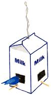

Connie Toops turns half-gallon milk cartons into handy bird feeders around her home in Ocean Springs, Mississippi.
First, she makes 2" slits parallel to (but 1" up from) the bottom at all four corners. Next, she folds the carton's edges inward above each cut, creating four little access ports, and runs two 8" lengths of 1/4" dowel through holes punched below the ration stations. Then she suspends the feeder by a cord and fills it through the pouring spout.
Much to Ms. Toop's delight, her feathered friends now frequent her "milk bars" all year long.
She reminds us, however, that birds will come to depend upon their free food, so be sure to keep the feeding up!
(October 1981)
|
 |
|
|